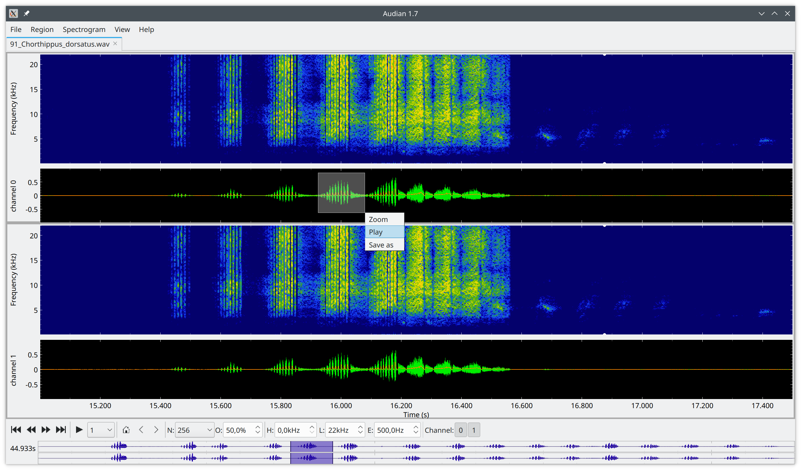

audian - AUDIoANalyzer
Python- and pyqtgraph-based GUI for viewing and analyzing recordings of animal vocalizations.

Features
- Interactive viewer for single and multi-channel audio signals.
- Can handle many file formats and long recordings - holds only part of the recordings in memory.
- Displays raw traces, filtered traces, envelopes, and spectrogram.
- Change spectrogram resolution, overlap, color bar range and color map interactively.
- Change low- and high-pass filter cutoff frequencies interactively.
- Optional envelope with lowpass-filter cutoff frequency that can be changed interactively.
- Hide and show channels as well as plot panels.
- Extensive and intuitive key shortcuts for most functions.
- Plugins for additional computed traces, plot panels, and analysis.
audian data.wav
User manual
I just started to write a user manual.
Development
I currently explore various possibilities for interactive analysis of audio signals. In the end, audian should be easily extensible via plugins that provide processing and analysis algorithms, and audian handles all GUI aspects.
Incomplete list of TODOs:
- [ ] Implement Model-View structure
- [x] Handle all data (raw, filtered, spectrogram,...) in one class!
- [x] Boil down the BufferedData code to a simple plugin interface.
- [x] Add destination list to Buffered data.
- [x] Smart updates of trace buffers.
- [x] Move spectrum functions from Data to BufferedSpectrum.
- [x] Move y-lim functions from TracItem and SpecItem to DataBrowser.
- [x] Traces should be assignable to plots.
- [x] TraceItems should get color and line width from data objects.
- [x] Recompute derived data whenever a source is changed.
- [x] Update plots of all items that have been recomputed.
- [x] Recompute derived data only if visible or used by something visible.
- [x] Automatically discover plugins.
- [x] Analyzer plugins for analysing a select snippet of the data.
- [ ] Test this plugin interface with
- [ ] Subtract common mean
- [x] Logarithmic and high-pass filtered envelope
- [ ] Envelope from visible frequency range of spectrogram
- [ ] Feature expansion (kernel filter)
- [ ] Improve zoom stack behavior!!!
- [ ] Add events and marker ranges to the Data class
- [ ] Load events from csv files provide along with the raw data.
- [ ] Provide interface for event detectors
- [ ] Provide interface for event filters?
- [ ] Implement a proper layout for showing the plot panels:
- [x] Support additional plots from plugins
- [ ] Proper y-labels for xt plots: channel not for single trace plot, otherwise plot name with unit.
- [ ] add units to amplitude axes
- [x] Amplitude ranges should consider ampl_min/ampl_max of all traces
- [x] Add yt plot with independent y-axis key shortcut
- [ ] Update cross-hair code to the new plot_ranges
- [ ] Support optional grid layout
- [x] New plot widget showing power spectrum of visible range.
- [ ] Support horizontal power spectrum
- [ ] Cycle with Ctrl+P through no power plot, power spectrum to the right, power spectrum on top.
- [ ] FullTracePlot:
- [x] fix offset problem.
- [x] indicate time under mouse cursor.
- [x] compute full trace in the background.
- [x] store and load full trace to user specific cache dir.
- [ ] background computation and file saving only if long enough.
- [ ] command line script for computing fulltrace plot
- [x] Add a toolbar widget for spectrum overlap
- [x] SpinBox for envelope cutoff frequency needs to show digits after decimal point.
- [ ] Interactive high- and low-pass filtering:
- [ ] make the lines and the corrseponding toolbar widget a general property of the spectrogram plot
- [ ] allow for flexible connetctions of these features to some bufferedata update function.
- [ ] high- and low-pass filter lines must not cross! Update limits.
- [ ] add a toolbar widget for setting filter order.
- [ ] Implement downsampling of spectrograms! Or make it even dependent on window size.
- [ ] Improve on the concept of current cursor:
- [ ] play should not stop at visible range but keeps going and scrolls data.
- [ ] make cursor moveable by mouse.
- [ ] some key shortcuts for moving and handling cursor.
- [ ] Improve on marking cross hair, cues, regions, events:
-
[x] Cross hair should only be used for measuring! Just a single whitish color. Comments only in the table. Show points only fom active measurement.
-
Cues and regions have position data with labels. Same for all channels.
- visualize them by infinite vertical lines/regions, both in plots and FullTracePlot (maybe in extra row?).
- can be set from cursor position/marked region.
- add key shortcuts to go to next/previous cue.
- from cue table go to selected cue.
- how does boris export them?
- Events are channel specific points.
- Plotted as dot at data amplitude.
- Many events per label.
- Result from some analysis.
- But should be editable.
- Event regions are channel specific:
- Plotted as lines on top of data.
- Result from some analysis.
- But should be editable.
- [ ] Define plugin interfaces for analysis on full data, visible range, selected range.
- [ ] Have a dockable sidebar for showing metadata, cue tables etc.
Structure
Eventually we want audian to be neatly separated into a data model, widgets that display the data, and controllers.
Model
At the core of audian are time-series data that are loaded from a file. In addition it supports varous derived time-series data, like for example filtered data, computed envelopes, spectrograms, etc. Audian can handle very large data sets, but holds only a small part in memory (buffer).
class BufferedData: Base class for computed data (buffereddata.py).class BufferedFilter: Filter source data on the fly (bufferedfilter.py).class BufferedEnvelope: Compute envelope on the fly (bufferedenvelope.py).-
class BufferedSpectrogram: Spectrogram of source data on the fly (bufferedspectrogram.py). -
class Data: Handles all the raw and derived data traces like filtered data, spectrogram data, etc (data.py). -
markerdata.py: All marker related stuff. TODO: Split it into widgets and marker data.
View
All the data audian is dealing with are displayed in plots.
A few classes specializing some pyqtgraph features:
timeaxisitem.py: Label time-axis of TimePlot.yaxisitem.py: Label y-axis of TimePlot.selectviewbox.py: Handles zooming and selection on all RangePlot.
Managing plots:
plotranges.py: Manage ranges of plot axes.panels.py: Manage plot panels.
Basic plots for time-series data:
rangeplot.py: Plot displaying any data with specified range type.timeplot.py: Plot displaying data as a function of time.spectrogramplot.py: Plot displaying spectrograms.
Basic plot items:
traceitem.py: PlotDataItem for TimePlot.specitem.py: ImageItem for SpectrogramPlot.fulltraceplot.py: GraphicsLayoutWidget showing the full raw data traces.
Controller
audiangui.py: Main GUI, handles DataBrowser widgets and key shortcuts.databrowser.py: Each data file is displayed in a DataBrowser widget.
Plugins
plugins.py: Discover and manage plugins.analyzer.py: Base class for analyzer plugins.statisticsanalyzer.py: Compute basic descriptive statistics.
Run audian from Spyder IPython console:
Call the audian script via a shell escape:
! audian
Installation
Simply run (as superuser):
pip install audian
This should also install: - ThunderLab - AudioIO
From the (spyder) IPython console, you can install it via
%pip install audian
Options
Output of audian --help:
usage: audian [-h] [--version] [-v] [-c CHANNELS] [-f FREQ] [-l FREQ] [-i KWARGS] [-u [UNWRAP]] [-U [UNWRAP]]
[files ...]
Browse and analyze recordings of animal vocalizations..
positional arguments:
files name of files with the time series data
options:
-h, --help show this help message and exit
--version show program's version number and exit
-v Print debug information
-c CHANNELS Comma separated list of channels to be displayed (first channel is 0).
-f FREQ Cutoff frequency of highpass filter in Hz
-l FREQ Cutoff frequency of lowpass filter in Hz
-i KWARGS key-word arguments for the data loader function
-u [UNWRAP] unwrap clipped data with threshold relative to maximum input range and divide by two using unwrap()
from audioio package
-U [UNWRAP] unwrap clipped data with threshold relative to maximum input range and clip using unwrap() from audioio
package
version 2.0 by Jan Benda (2015-2024)
Other scientific software for working on timeseries data
- BioSPPy: The toolbox bundles together various signal processing and pattern recognition methods geared towards the analysis of biosignals.